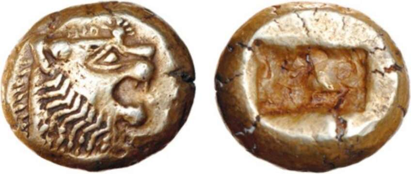

and that guaranteed its contents. Almost all coins in use today are descendants of the Lydian coins. Coins had two important advantages over unmarked metal ingots. First, the latter had to be weighed for every transaction. Second, weighing the ingot is not enough. How does the shoemaker know that the silver ingot I put down for my boots is really made of pure silver, and not of lead covered on the outside by a thin silver coating? Coins help solve these problems. The mark imprinted on them testifies to their exact value, so the shoemaker doesn’t have to keep a scale on his cash register. More importantly, the mark on the coin is the signature of some political authority that guarantees the coin’s value. The shape and size of the mark varied tremendously throughout history, but the message was always the same: ‘I, the Great King So-AndSo, give you my personal word that this metal disc contains exactly five grams of gold. If anyone dares counterfeit this coin, it means he is fabricating my own signature, which would be a blot on my reputation. I will punish such a crime with the utmost severity.’ That’s why counterfeiting money has always been considered a much more serious crime than other acts of deception. Counterfeiting is not just cheating — it’s a breach of sovereignty, an act of subversion against the power, privileges and person of the king. The legal term is lese-majesty (violating majesty), and was typically punished by torture and death. As long as people trusted the power and integrity of the king, they trusted his coins. Total strangers could easily agree on the worth of a Roman denarius coin, because they trusted the power and integrity of the Roman emperor, whose name and picture adorned it. 27. One of the earliest coins in history, from Lydia of the seventh century BC.
